I spent most of my last week building my first React Application that fetches data from AWS DynamoDB and adds data to DynamoDB. In that process, I ended up banging my head to table so many times trying to understand the AWS documentation filled with jargons and trying to find the working code snippet in StackOverflow.
So I thought I can write a brief tutorial on how we can fetch and handle data from DynamoDB in React-Redux Application.
Disclaimer: I am no expert on React or AWS, I am just trying to simplify the steps given all over the web to get you started with React+AWS.
Step 1: Create a DynamoDB Table
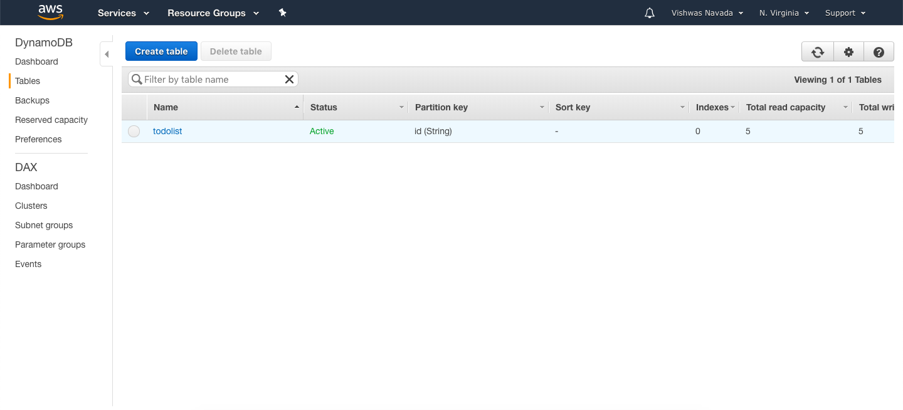
Sign-up for the free tier in AWS and goto DynamoDB section. Here create a new table by giving a suitable table name, primary key and primary key datatype. Since DynamoDB follows non-relational database style, you won't be specifying any of the columns here. In my example, I have created a table 'todolist' that will store text passed from React applications and 2 auto-generated column values- id and timestamp.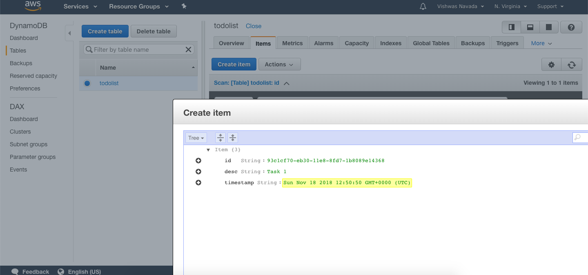
Once the table is created, you can go to the *items* tab to insert sample data into the table. Here you can specify what columns you are planning to have in your table.Step 2: Creating Role for managing access and permissions inside AWS
AWS handles the access through roles and policies, so before you create a function to add or fetch data from DynamoDB, you need to create a role that has access to Lambda and DynamoDB. To achieve it, Go to IAM Management Console in AWS and under Roles, create a new role.
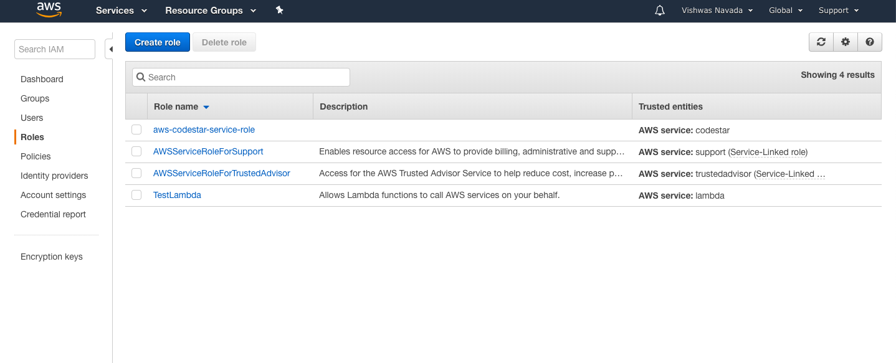
Select Lambda and click on **Next: Permissions** button.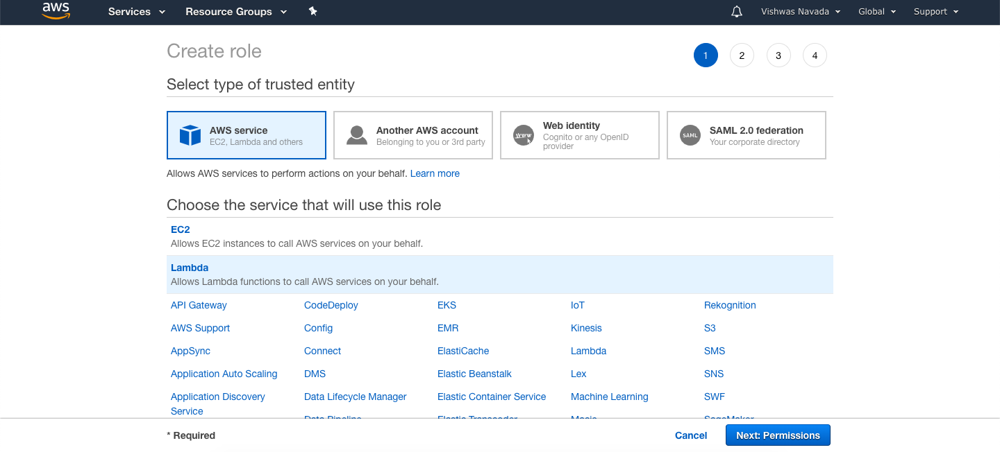
Now search for the policies **AmazonDynamoDBFullAccess** and **AWSLambdaFullAccess** and add them. Please note that these policies will give the lambda function you are going to create full access to execute and manipulate dynamoDB tables. Use them for learning purpose only. I would not suggest to use the same in a production application.In the 4th step, give the role a name and save it.
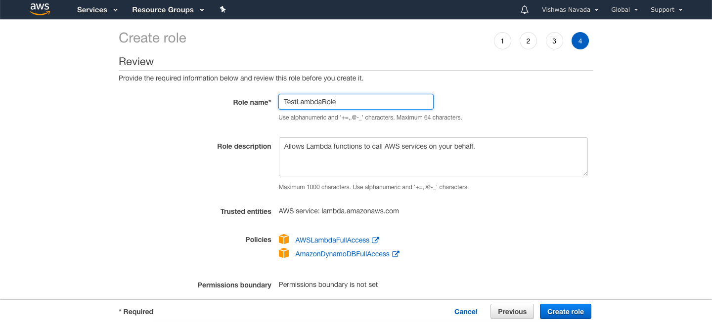
To fetch data from DynamoDB
Step 1: Create a lambda function to fetch data
AWS Lambda is a serverless platform that allows you to write functions in Nodejs/Python/Go that can be invoked from an API call. To begin with, Go to Lambda Management Console, click on create function.
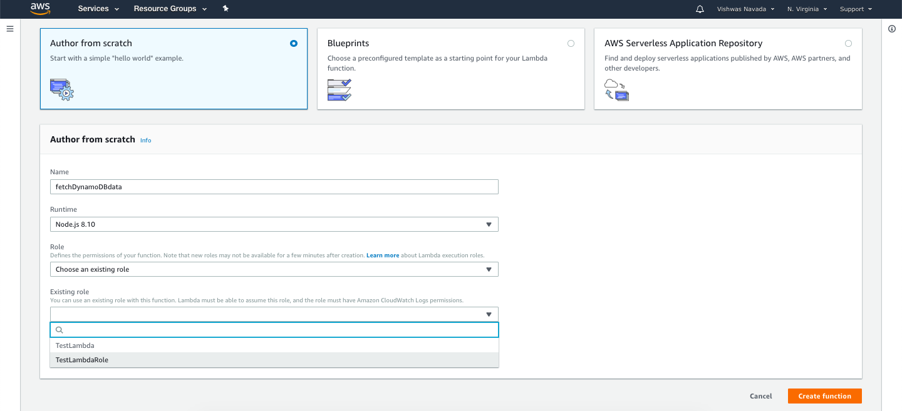
Give a name, select the Runtime as Node and choose the role we created in the previous step for Lambda function.Now you will be promoted with the text editor to write your nodejs code to fetch data from DynamoDB. Here is the sample code that fetches data using scan function.
var AWS = require('aws-sdk'),
myDocumentClient = new AWS.DynamoDB.DocumentClient();
exports.todoFetchItems = function (event, context, callback) {
var params = {
TableName: 'TABLE_NAME',
};
myDocumentClient.scan(params, function (err, data) {
if (err) {
callback(err, null);
} else {
callback(null, data.Items);
}
});
};After adding the code, make sure that the exported function name is given in the handle field just above the text editor.
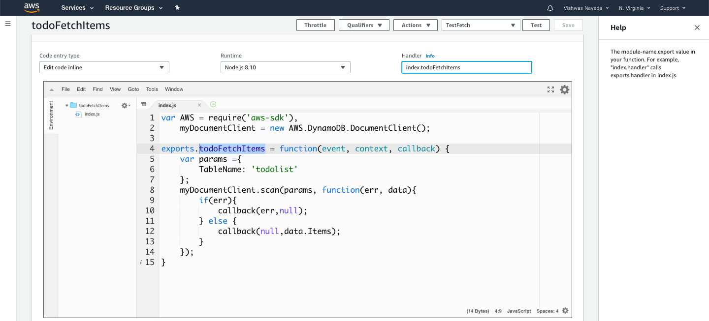
Once done, save and test the Lambda function for errors.
Step 2: Create API Gateway
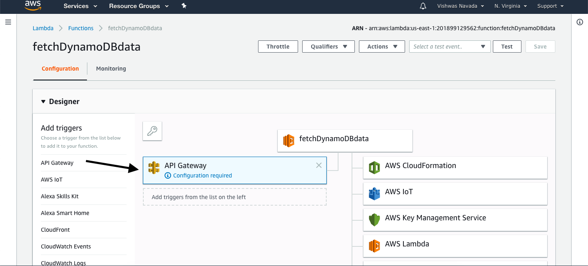
Click on API Gateway under Add Triggers Menu in Designer. Click on the added trigger and scroll down to set up the API as shown in the below picture.
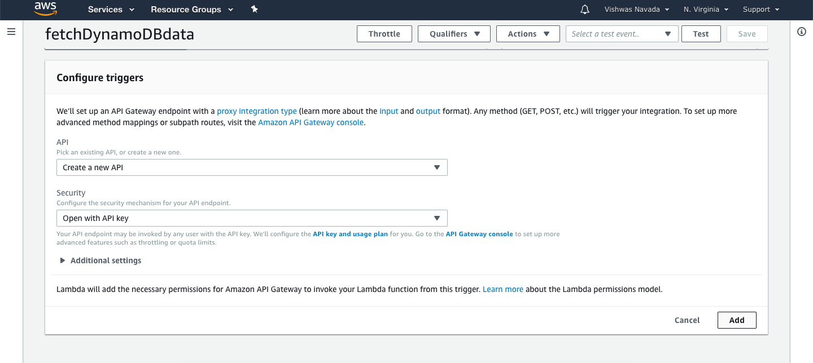
Save the Lambda, click on the API name that gets generated after saving to go to API Gateway Management Console.
Here you need to configure the methods that your API need to accept. First, delete the existing ANY method.
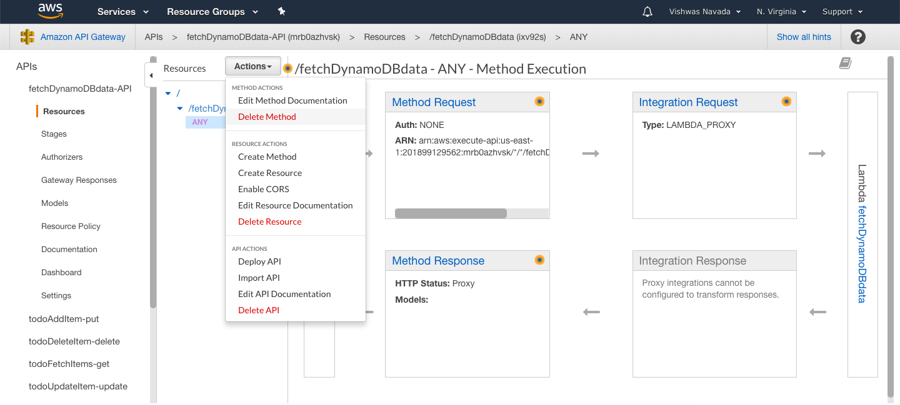
Add GET method to the API and with the below settings save the API.
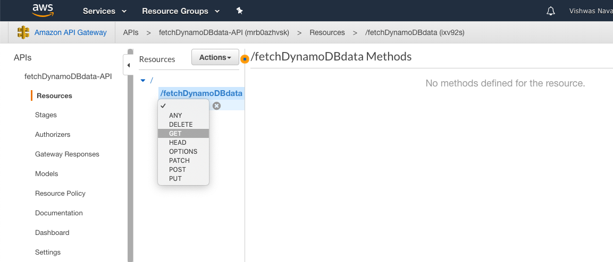
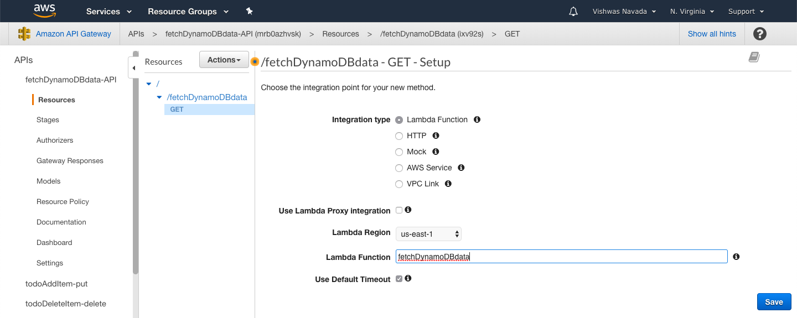
Now you need to configure the API to accept the API for security. Do to that click on the Method Request, click the pencil icon beside **API Key Required** field and make it true.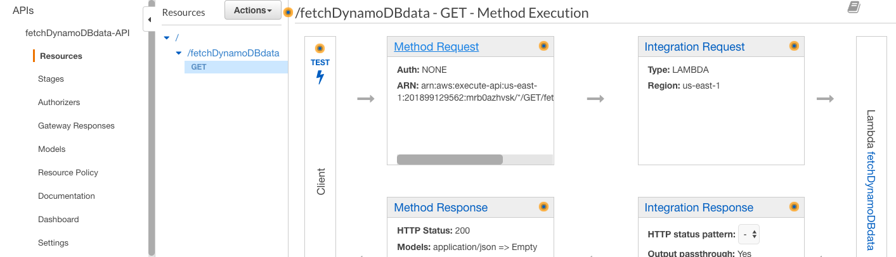
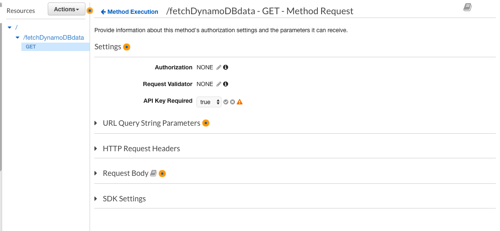
You need to enable CORS(Cross-Origin Resource Sharing) in your API to test it from localhost or to access the API from different the origin (you can read more about CORS here).
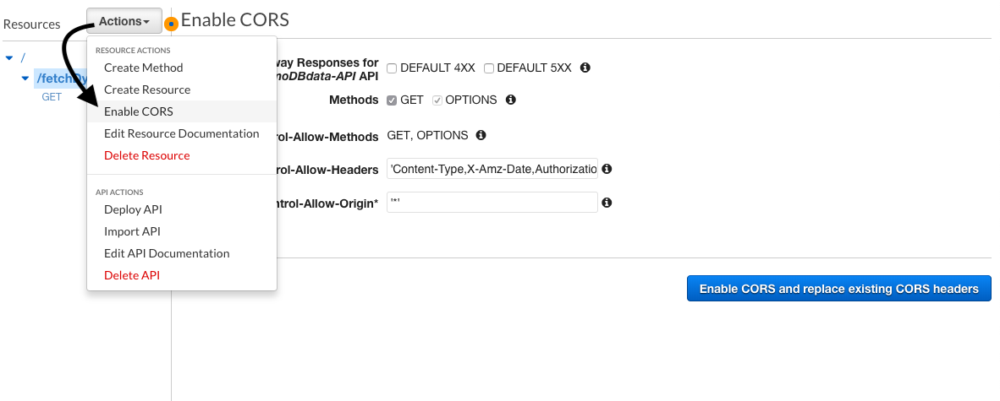
Once you are done with setting up the methods. Deploy the API in default state go get the URL.
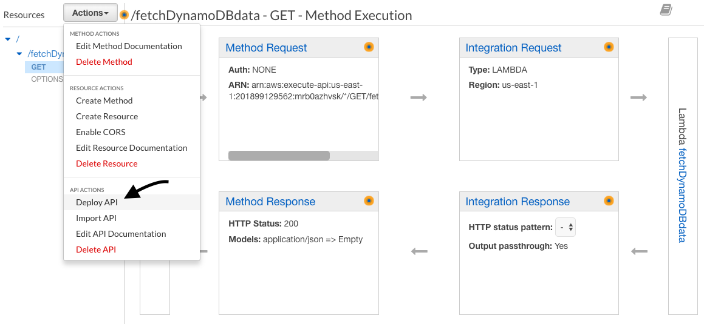
You can now test the API URL with Postman API Client.
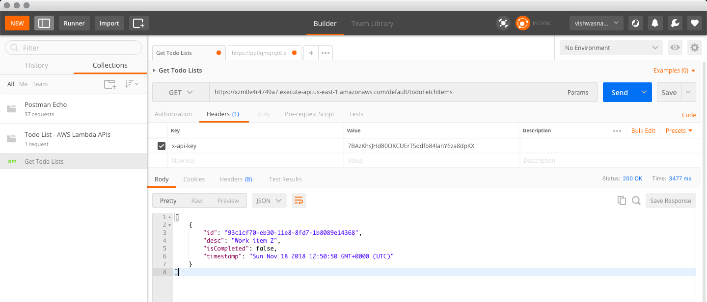
Step 3: Using the API inside React
Get the secret API key for your API by going to API Keys in API Gateway Console and select the key with the same name as the API you just created.
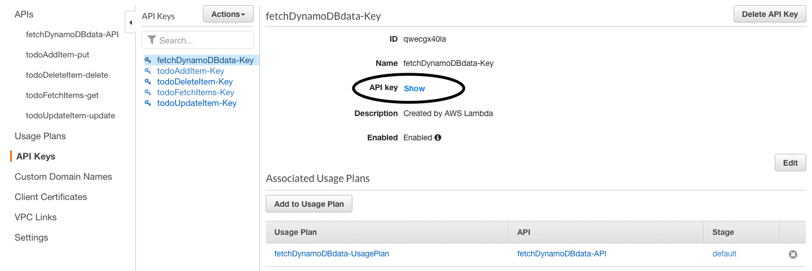
In my case, I am using Redux store to handle my states. I have created an action to fetch the data and put it to the state. Here is the sample code.
export function fetchTodoList() {
var request = fetch('API-URL', {
method: 'GET',
headers: {
'Content-Type': 'application/json',
'x-api-key': 'API-KEY',
},
})
.then((response) => response.json())
.then((data) => {
return data;
})
.catch((error) => console.log('Error while fetching:', error));
return {
type: ActionTypes.FETCH_TODOLIST,
payload: request,
};
}To send Data to DynamoDB
Step 1: create the lambda function and API
Create the lambda function and API Gateway(also CORDS method) as shown previously and put the below sample code that uses put method to add data to dynamoDB table.
var uid = require('uuid');
var AWS = require('aws-sdk'),
myDocumentClient = new AWS.DynamoDB.DocumentClient();
exports.todoGetItem = function (event, context, callback) {
var params = {
TableName: 'TABLE_NAME',
Item: {
id: uid.v1(),
desc: event.desc,
isCompleted: false,
timestamp: new Date(Date.now()).toString(),
},
};
myDocumentClient.put(params, function (err, data) {
if (err) {
console.log('Error', err);
} else {
console.log('Success', data);
}
});
};Here I am fetching the 'desc' (Line 10) from the URL that is being sent from the React App which I will explain in next the step. Also, I am using ''uuid' package to auto-generate a unique ID for the id column in my table. More about it can be found in this thread.
Step 2: create POST method and adding parameters
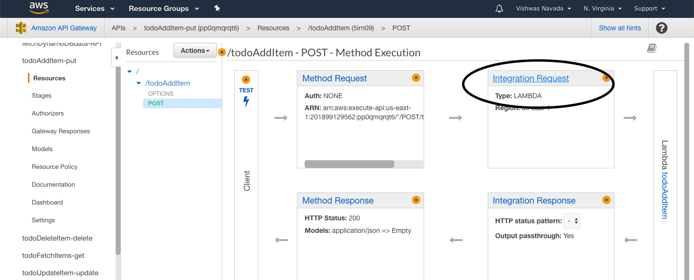
Create a POST method and save. After that click on Integration Request and scroll down to Mapping Templates. Click on the Add mapping template and add application/json content type.
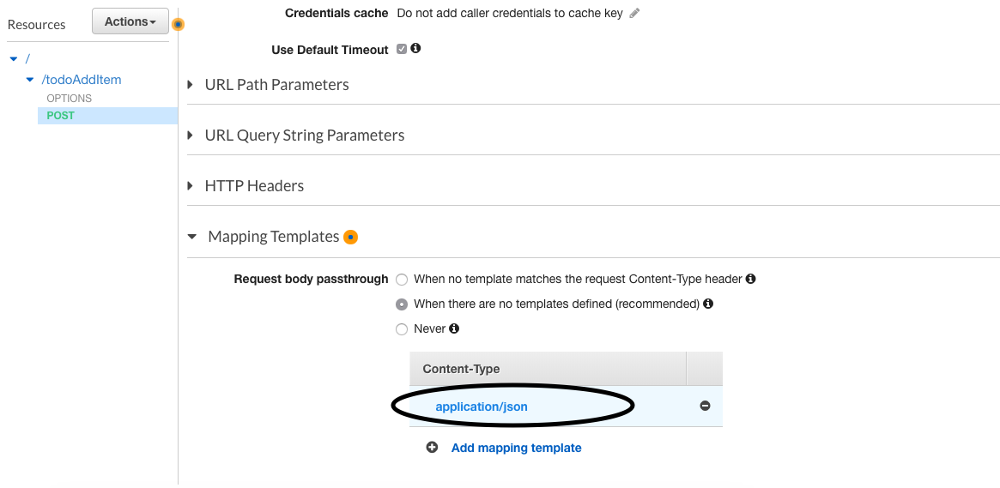
Add its content as shown below.
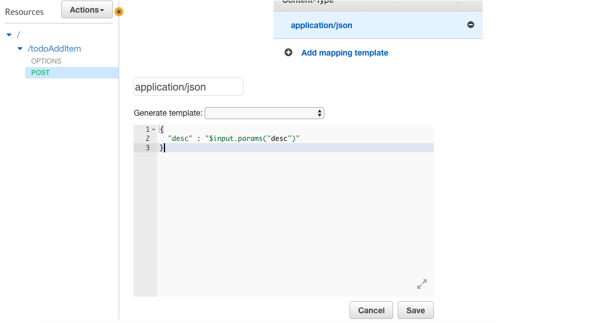
This piece of code will read the 'desc' from the API parameters and sends it as JSON to the lambda function. Thus passed parameter can be fetched from the event object as shown in the sample code above.
Now deploy the API to use that in React Application.
Step 3: Using the API inside React
Here is the code I used to send the data via API.
export function addTodo(item) {
var request = fetch(`API-URL?desc=${item}`, {
method: 'POST',
headers: {
'Content-Type': 'application/json',
'x-api-key': 'API-KEY',
},
})
.then((response) => response.json())
.then((data) => {
return data;
})
.catch((error) => console.log('Error while adding:', error));
return {
type: ActionTypes.ADD_TODO,
payload: request,
};
}Uff. I shouldn't have mentioned the word brief at the beginning. This post is longer than I expected. If you have any question or comments tweet to me @vishwasnavadak.